1. Introduction
This document describes the Electrical and Computer Engineering Departmental Policy and Grading Information for the evaluation of Work Term Reports submitted for credit by Electrical Engineering students and Computer Engineering Students.
The Co-Operative Education and Career Services Department produces a booklet [1] which describes various co-op related regulations. It includes a chapter on work term report guidelines, an appendix on regulations and a supplement for the Faculty of Engineering specific rules. This document is intended to augment that material with various departmental regulations and guidelines.
The goal of a work term report is to assist the student in developing his/her technical communication skills. With that goal in mind, the work term report is to be judged on both matters and communication skills. Each report must obtain a passing grade in each component. The sections below describe these two components.
1.1 Report Topic
When selecting a work term report topic, write the purpose and scope sentence/paragraph for your report's Introduction and Summary sections. If it implies a set of conclusions which imply a set of recommendations, that will communicate the expected/required level of engineering analysis, insight, and judgement, then the report topic should work well. In most cases, you want to approach the report as if you are a consulting engineer who has been retained by a client to investigate some issue/problem and supply a set of engineering recommendations to resolve that issue/problem for the client.
It is important when selecting a work term report topic to keep in mind the report will be marked based on which academic terms you have completed. As you progress through the program the technical content and technical communication expectation increase. In your first report, qualitative analysis may be acceptable. By your third report, quantitative analysis is required. In addition, the report topic must be within E&CE topics.
1.2 Confidential and Self-study Work Reports
All students are expected to submit work term reports which describe a technical topic related to their work on a work term. This report should not be a company document, with some added sections to turn it into an acceptable work report. It should be a report, written specifically to satisfy the requirements of the work term report component of the B.A.Sc. degree. Whenever possible it should be cleansed of any company confidential information.
We recommend that you discuss your work-term report with your coop employer during the second month of your work term. Since coop employers hire students from different programs, you may have to explain to them the E&CE work term report guidelines and marking procedures. This will avoid situations where your employer indicates at the last minute that the report can not go outside the company. E&CE work term report markers will not sign a non-disclosure form related to your work term report or material contained in it. The only accommodation for a report marked confidential is the report will travel in an envelop marked confidential and only be read by one marker.
In exceptional circumstances, you are allowed to submit at most one self-study work term report, out of the four required, as part of your undergraduate degree program. A self-study report has all the same requirements as a regular work term report except for the Contributions section where you indicate it is not related to your coop work term job.
Confidential reports can not be considered for awards or receive a grade of outstanding.
1.3 Employer Marked Work Reports
Electrical Engineering and Computer Engineering work term reports are markedby the E&CE department. In exceptional cases, the E&CE departmentmay allow at most one of a student's four work term reports to be marked bysomeone outside of the department which the E&CE work term reportcoordinator has approved. This is a time consuming process and in manycases results in the report not being marked in time and the student beingassigned a failing grade for that work term report course.
The process starts by the student contacting their undergrad program advisor (Electrical Engineering students contact Electrical Engineering Undergraduate Advisor , while Computer Engineering students contact Computer Engineering Undergraduate Advisor ) supplying the following marker information: company name, name, title, position within the company, contact information, PEO registration number, along with the name and contact information for their CECS field coordinator. The student will also supply their undergrad program advisor with: title of their report, date they submitted the work term report to their employer, number of pages in the report front matter, number of pages in the report body, number of pages in the report back matter. The student's program undergraduate advisor will contact the marker and CECS field coordinator to confirm the information. Once all the information has been confirmed, the student's program undergraduate advisor will supply it to the E&CE work term report coordinator for approval. If the marker is approved, then the student's program undergraduate advisor will supply the marker: the E&CE work term report guidelines, marking form, marking instructions, and a request that the marker inform us in writing on company letter head: the date they received your work term report, he/she marked it in accordance with the supplied instructions, title of the report, number of pages in the report front matter, number of pages in the report body, number of pages in the report back matter, their PEO registration number and signature. Once the marker has marked the report, they would forward the completed marking form to your program undergraduate advisor along with a signed statement (including PEO registration number) on company letter head that the report was marked according the specified guidelines.
The student's program undergraduate advisor would keep a copy of: ( the email from the student, first memo to your marker, first memo from your marker, second memo to your marker, second memo from your marker, marking form ) in the student's undergraduate file prior to forwarding a copy of the marking form to CECS and the E&CE work term coordinator. The work term report mark would be folded in with the other work term report grades when the grades are submitted at the end of the term.
2. Report Structure and Format
Three things go into a good work term (technical) report:
- structure and format
- technical communication skills
- technical/engineering analysis and content
There are many valid technical report formats used across the industry. For uniformity across the reports marked by the Department of Electrical and Computer Engineering, students are to follow the structure and format specified in this guide.
The report is made up of three parts: front matter, main body, back matter. The report is to use 11 point times-roman font for paragraph text with 1.5 line spacing in the report body. Single line spacing for front and back matter, except for Contributions and Summary sections which are 1.5 line spacing. Section headings are either 12 or 14 point times-roman bold font with 2 to 3 line spacing between sections. Each page should have a 1.5" left margin and 1" margins right,top,bottom with full justification paragraphs. The report body and appendices should use section numbers. The front matter is to be written for a nontechnical reader, with no section numbers or references cited in it. The Glossary and References are not to have section numbers. The report body (not including the one page Conclusions section and one page Recommendations section) should be 10 to 15 pages. Only reports using single sided printing will be accepted.
The front matter of the report should include the following in the specified order
- Title Page
- Letter of Submittal
- Contributions
- Summary
- Table of Contents
- List of Figures
- List of Tables
Front Cover
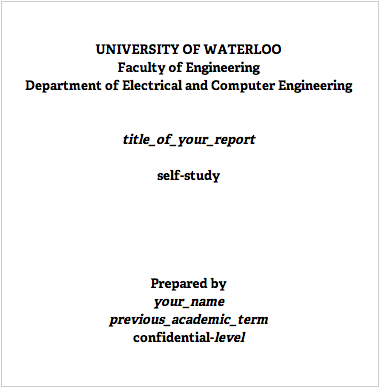
Title Page
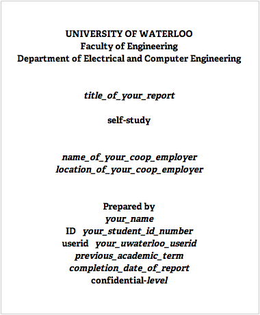
Letter of Submittal
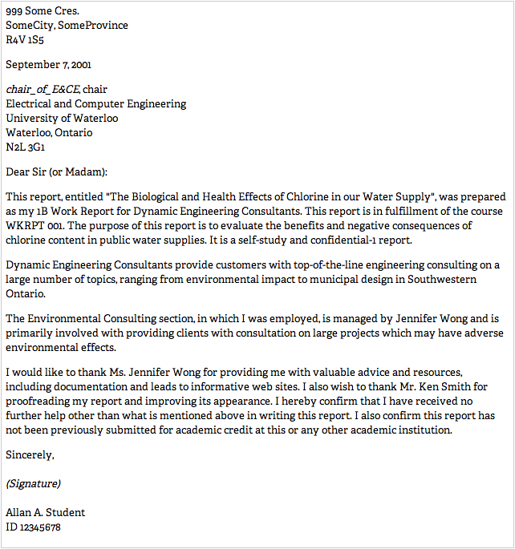
It should be in standard business letter format and addressed to the E&CE chair. It must contain the following
- "confidential-1" if a confidential report
- "self-study" if a self-study report
- report title
- course the report is being submitted for
- academic term completed
- name of employer
- department(s) worked for
- employer/department activity
- purpose of report
- assistance acknowledgement
- state who the report was written for
- declaration statement of the form I hereby confirm that I have received no further help other than what is mentioned above in writing this report. I also confirm this report has not been previously submitted for academic credit at this or any other academic institution.
- student's name
- student's id number
- student's signature
Contributions Section
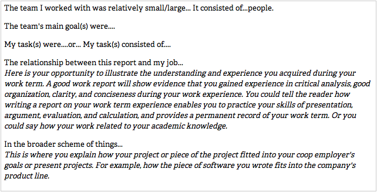
The following is a suggested format
It is a two to three page section written in first person which clearly identifies the student's contribution to the work. The primary purpose of this section is to permit the reader to evaluate the student's involvement in the work and the student's understanding of how their work relates to the team's goals. It is not the intent to mark the level of contribution. This section includes the following information:
- The size of the team working on the entire project
- The team's main goal(s)
- Student's task(s)
- How the work term job relates to the work described in the work term report. (Note this does not preclude self study in exceptional circumstances.)
- How this work fits into the company's broader scheme of things.
Summary
It is an executive summary which communicates: the purpose and scope of the report, the major points in the report, highlights of the conclusions, and highlights of the recommendations.
Keep in mind the front matter is to be written for a nontechnical reader. The following is a suggested format which normally results in wording for a nontechnical reader.
- paragraph one
-
The main purpose of the report is ... .
The scope of the report is ... .
- paragraph two
- The major points documented/covered in this report are ...
- paragraph three
- The major conclusions in this report are ...
- paragraph four
- The major recommendations in this report are ...
Table of Contents
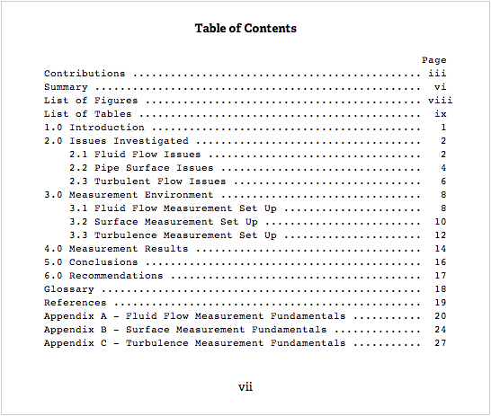
It should appear on a separate page and contain entries for each report body section, subsection, ..., as well as, all the front matter and back matter (excluding the Table of Contents itself).
List of Figures
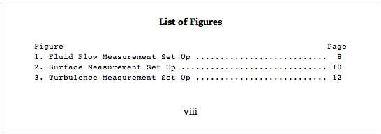
List of Tables
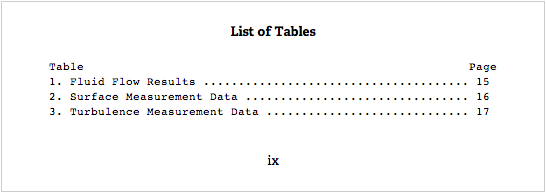
The front matter page numbers should be lower case roman numerals centered
at the bottom of the page with the title page as page one.
However, page numbers should not appear on either the title page or
letter of submittal. The page numbering should restart at start of
report body and be arabic numbers.
The main body of the report should clearly introduce and discuss
the engineering analysis done, with conclusions drawn and recommendations
made at the appropriate points in the report body. The sectioning should
effectively guide the reader through the report. Complex details should be
relegated to figures, tables, glossary, appendices, or cited references.
Low-level explanations should be clear, concise, and direct. Paragraph and
sentence structures should be appropriate for a student in the specified
academic term. Standard techniques should be used to refer to mathematics,
figures, tables, code fragments, appendices, glossaries, references, etc.
All acronyms and jargon should be defined when they first appear in the
report body and in the glossary. Spelling and grammar should be correct,
consistent, and appropriate for a student in the specified academic term.
The report should be formatted in a consistent and visually pleasing way
which adheres to these guidelines. All material from other sources is
properly cited. There should be a minimum of three references cited (in
IEEE format) in the report body with at least one of them a non-Internet
source. The body must include Conclusions and
Recommendations sections at the end of it.
The Conclusions section should clearly state what conclusions were
drawn from the engineering analysis in the body of the report. They should
be short (half a page to one page long), to the point, and only state
conclusions actually mentioned in the body of the report.
The following is a suggested opening phrase
- From the analysis in the report body, it was concluded that ...
followed by clear statements of the actual engineering conclusions and not a
summary of the report. This results in a Conclusions section which
communicates the required information.
Conclusions should be brief, but complete and understandable. You may use
lists, but easy-to-read sentences are best. Each paragraph should deal with
only one aspect of the study. Conclusions may only be drawn if they are
supported fully by the analyses described in the body of your report or the
references cited in the report body. Three or more conclusions are
expected.
The Recommendations section should clearly state what the
recommendations (allocation of capital, human resources and/or future
improvements) to your employer or management are to address the issues and
conclusions in your report.
The following is a suggested opening phrase
-
Based on the analysis and conclusions in this report, it is recommended
that ...
followed by clear statements of what actions you are recommending to
management results in a Recommendations section which communicates the
required information.
Two or more recommendations are expected.
Proper technical writing practices are to be followed:
-
all figures have a number and title/caption below the figure,
-
consistent figure numbering in the report body,
-
all figures taken from another source, cite that source by reference
number on the figure title line,
-
all figures are cited (referred to by number) in the report body text
before they appear in the report body,
-
all tables have a number and title/caption above the table,
-
consistent table numbering in the report body,
-
all tables taken from another source, cite that source by reference
number on the table title line,
-
all tables are cited (referred to by number) in the report body text
before they appear in the report body,
-
all figures and tables are readable,
-
all appendices are cited (referred to by number or letter) in the report
body text,
-
each reference (in the Reference section) is cited in the report body.
The back matter of the report must include a References
section and optionally glossaries and/or appendices.
The References section must contain at least three references, a
minimum of one must be a non-Internet source. Each reference must be
referred to (cited) in the body of the report. This list of references must
be in the standard IEEE format (as described in [2]
or [3]) and include sufficient material for a reader
to contact the publisher and obtain a copy of the referenced material. In
addition, it must clearly identify the source of all quotations,
paraphrases, and technical data used in the report. A report which fails to
identify such sources shall be viewed as unacceptable and the student may be
charged with plagiarism. In short, anything that is not yours must be
referenced. References that are not accessible by the marker (such as
Personal Communications, restricted access web sites, etc.) are not
acceptable. As an alternative, if a reference is not easily accessible by
the marker, you may include a copy of it as an appendix, provided it is
about 15 pages or less. References must be ordered (numbered) in the
sequence first cited in the report body.
The Glossary section should define and explain all acronyms and
special technical terms used in the report. The Glossary section
must come before the References section.
3. Technical Communication
3.1 Structure and Flow
The topic is clearly introduced and discussed, with conclusions drawn and
recommendations made at the appropriate points in the report body. The
topic, major conclusions and recommendations are restated in the
Summary, Conclusions and Recommendations
sections. Sectioning effectively guides the reader through the report.
Complex details are relegated to figures, tables, glossaries, appendices, or
cited references.
3.2 Detailed Presentation
Low-level explanations are clear, concise, and direct. Paragraph and
sentence structures are appropriate to a university student at the specified
level. Standard techniques are used to refer to mathematics, figures,
tables, code fragments, appendices, glossaries, references, etc. Acronyms
and jargon are defined.
3.3 Writing and Formatting
Spelling and grammar are correct, consistent, and appropriate to a student
in the specified academic term. The report is formatted in a consistent and
visually pleasing way which adheres to the E&CE guidelines. Material
from other sources is properly cited.
4. Technical Content
The topic has sufficient scope and depth to justify a report. The
writing displays evidence of sound engineering judgement, analysis, and
insight appropriate to a university student at the specified level. The
technical details appear to be correct, and form a coherent whole.
If the report is on an engineering design, the customer requirements and
design specifications are appendix material but may be summarized in the
report body. The body of the report should document the engineering
process of transforming the customer requirements into the functional
specifications followed by the engineering process to transform the
functional specifications into the design specifications. That is, the
body of the report is on the engineering of the product/artifact not a
marketing/product document of the finished product/artifact.
It is expected that a report should include a clear definition of the
problem at hand with the criteria for evaluating a possible solution.
Quantitative criteria are preferred in engineering. The report should
also include the discussion and analysis of at least two possible
solutions based on the criteria. Conclusions and recommendations are
made within the discussion and analysis.
In general, a report with a comparison by itself is not acceptable. A
comparison may be acceptable if it is done as part of the student's own
analysis of each possible solution. Comparisons are generally not
acceptable for third and fourth year reports.
Remember to cite the source of all material used in your report not just
things you quoted. The introduction of your report should cite each of the
references you used for background reading. If you use a figure, diagram,
data, or a table, even in modified form, you must cite the source of it.
Failure to do so may result in a plagiarism case.
Remember, a report content must not be related or similar to another
document that you or somebody else received academic credit for. This
includes work term reports, fourth year design reports, or any other
document. Violation of this may result in a plagiarism case.
If a report does not contain sufficient engineering analysis, it will be
rejected with an unacceptable grade. Remember, technical content and
engineering analysis expectations increase with the level of the report.
References
- [1]
-
Olaf Naese, Ed.
Co-Op Student Manual, Co-Operative Education and Career
Services, University of Waterloo, Waterloo, ON, 1993.
- [2]
-
IEEE Power Engineering Society, Publication Guide, IEEE Power
Engineering Society, IEEE, Piscataway, New York, 1994.
- [3]
-
IEEE Computer Society Press, CS Style Guide, IEEE Computer
Society Press, Piscataway, New York, 1997, This material is available
from:
IEEE Computer Society Style Guide
Appendix A: Marking Form
A work report examines a student's abilities to display sound engineering
judgement on a topic of analysis or design and to produce a written report
which is clear, concise, and convincing. Constructive comments by
evaluators are given to guide the student towards improved skills in
communicating engineering ideas.
The lower part of the E&CE work term report marking form contains 4
sets of radio buttons of the form: yes, mostly,
marginally, slightly, no. One set for each of:
- Structure and Flow:
-
The topic is clearly introduced and discussed, with conclusions drawn and
recommendations made at the appropriate points in the report body. The
topic, major conclusions and recommendations are restated in the
Summary, Conclusions and Recommendations
sections. Sectioning effectively guides the reader through the report.
Complex details are relegated to figures, tables, glossaries, appendices, or
cited references.
- Detailed Presentation:
-
Low-level explanations are clear, concise, and direct. Paragraph and
sentence structures are appropriate to a university student at the
specified level. Standard techniques are used to refer to mathematics,
figures, tables, code fragments, appendices, glossaries, references, etc.
Acronyms and jargon are defined.
- Writing and Formatting:
-
Spelling and grammar are correct, consistent, and appropriate to a student
in the specified academic term. The report is formatted in a consistent
and visually pleasing way which adheres to the E&CE guidelines.
Material from other sources is properly cited.
- Technical Content:
-
The topic has sufficient scope and depth to justify a report. The
writing displays evidence of sound engineering judgement, analysis, and
insight appropriate to a university student at the specified level. The
technical details appear to be correct, and form a coherent whole.
This is followed by a Critical Feedback section where the
technical content marker can supply written comments and suggestions.
The final grade for the report is calculated in two steps: technical
content and technical communication. The technical
communication score is found by summing up the Structure and
Flow, Detailed Presentation, and Writing and
Formatting scores.
Marking Form
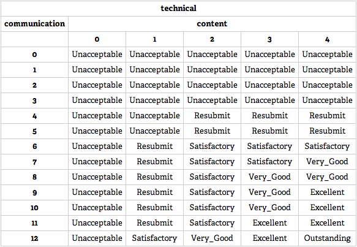
A report which is graded resubmit by the technical content marker,
can be rewritten and resubmitted by the last day of lectures in that term.
The marker can indicate if part or all of the report must be rewritten and
resubmitted. Reports may only be resubmitted once. The final grade
algorithm for these resubmitted reports is
Re-submitted Grade
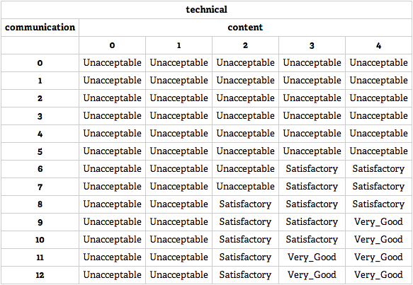
The actual mark submitted and appearing on the transcript
| grade | mark |
|---|
| Outstanding | 95 |
| Excellent | 89 |
| Very Good | 75 |
| Satisfactory | 65 |
| Unacceptable | 38 |
Appendix B: Frequently Asked Questions
-
How to tell if a report topic will be acceptable
-
Write the purpose and scope sentence/paragraph for your report's
Introduction and Summary sections. If it implies a set of conclusions
which imply a set of recommendations, that will communicate the
expected/required level of engineering analysis, insight, and judgement,
then you are fine. If it does not, then you need a new topic. In most
cases, you want to approach the report as if you are a consulting engineer
who has been retained by a client to investigate some issue/problem and
supply a set of engineering recommendations to resolve that issue/problem
for the client.
-
Referencing URLs?
-
Follow the link for the
IEEE Computer Society Style Guide in the
References section of these guidelines.
-
Reference for figure or table?
-
Your figure title/caption would look like
Figure x: figure title [1]
where in the reference section [1] would point to the source for the
figure. A table is done in a similar fashion.
-
Report reading like a manual?
-
A manual tells you what something does or how to use some
software/hardware. Such documents are not acceptable since they do not
contain the required engineering analysis, insight, and judgement.
-
Do we use footnotes or endnotes to quote exact quotes and imported data?
-
Neither in the report body. See References in
these guidelines. Footnotes may be used in appendices.
-
References are only for exact quotes and imported data or figures?
-
No. References are much more than that. In fact, in technical reports,
a reference is rarely for a direct quote. A reference is normally used
to indicate where a given piece of IP (intellectual property) came from
or where a reader might find additional information on a given topic.
That is, a reference says, this idea or data came from that source, or
refer to that reference for additional information on this subject.
-
How many figures/tables are consider too many/few?
-
There is no exact number for this as it is context dependent on the
engineering material presented in the report body. However, zero tables
or figures normally indicates insufficient engineering analysis, insight,
and judgement. You need sufficient tables and/or figures to support the
engineering analysis and the flow of the report body text. If there are
too many tables and/or figures, which are not key to understanding what
the report body is saying, then these extra figures and/or tables should
be placed in an appendix.
-
What to do about confidential work term reports?
-
See Confidential Work Reports
section. All E&CE work term reports are marked by E&CE markers.
If your employer is not comfortable with a confidential-1 work term report,
then you will want to exercise your at most one self-study work term
report as part of your B.A.Sc. program option. Keep in mind, the
report you write for the company is to meet their requirements. The report
you write for the E&CE department is to meet the academic requirements
of your B.A.Sc. program.
See
contribution section for a self-study work term report
and
how to approach a self-study work term report.
-
Can I submit a work term report before it is required in the program?
-
no.
-
How are late work term reports handled?
-
See
E&P rule 17.
If a work term report is received after the due date, it will be assigned
a grade of 38 for the current term. There are two cases:
-
This occurred prior to fall 2009 term.
The late report will be marked as a supplemental exam in the
following term. This does not impact your term average, but does
increase your cumulative failed course count by one and results in a
CNDF (Conditional Promotion) assuming you have a 60% or better
average and no more than two failed courses in that term. If the
cumulative failed course count exceeds two, your academic decision
changes to MNP (May Not Proceed) per
E&P
rule 7 and you are stopped until it is reduced to less than 2.
Keep in mind the 38 remains on your transcript. When the course
is cleared a Supp Satisfied appears beside the original grade
indicating the failure has been cleared. When all the failed courses in
that term are cleared, the academic decision will change to PROG
(Promotion Granted) independent of the term average. As such, if you fail
a work term report, the grade of 38 appears/stays on your transcript and
your academic decision can be no better than PROG.
-
This occurred after the spring 2009 term.
You must enroll in the wkrpt course in some future term when the report
will be marked and the grade recorded. Keep in mind the report must be
cleared prior to a specified term (see Can I submit a
work term report before it is required in the program for details).
-
What goes in the contribution section for a self-study work term report?
-
A self-study work term report is like a regular work term report except
for:
-
In the Letter of Submittal you need to clearly state it is a
self-study work term report. The letter needs to address all the
other points mentioned in the report
Structure and Format
section.
-
In the Contribution Section, where it discusses
relationship between report and student's job, you clearly
state there is no relationship, as it is a self-study work term
report. As above, the contribution section needs to address all
the other points mentioned in the report
Structure and Format
section.
Keep in mind, a self-study work term report is always associated
with an actual coop work term and coop employer. This is always
possible for your second, third, and fourth work term reports as
you have six work terms but there are only four required work
term reports. You have a work term report due after your first,
third, fourth, and fifth work terms. The only exception to this
requirement is covered in
What if I do not get a coop job for my first work term.
See also
How to approach a self-study work term report.
-
What must be included in a design work term report?
-
In an engineering design, there would be two or more possible designs, from
which the better one is selected via engineering analysis
against the customer requirements. What that analysis looks like varies
drastically between design organisation/methods.
-
Should the Letter of Submittal have the header Letter of
Submittal on it?
-
no
-
Should the back matter page numbering continue on from the report body
page numbering?
-
In general yes. For manuals and large reports, appendices may have their
own page numbering, e.g. Appendix A may start with page A-1. However, for
short reports like a work term report, this would be rare.
-
Should figures/tables in appendix appear in List of Figures/Tables?
-
If the appendix is large, it may have its own List of Figures/Tables.
However, for work term reports, that would be rare. As such, for a work
term report, figures/tables in the back matter may appear in the
report's List of Figures/Tables but they should follow the numbering A-1
for the first one in appendix A and so on.
-
Can one decide not to submit a work term report in a given term and hand
it later in their program?
-
In general no, as it would result in a failed course on your
record and/or a May-Not-Proceed academic decision.
-
Should the report main body have numbered sections and subsections?
-
yes
-
Should the report back matter have numbered sections and subsections?
-
References, Glossary, ... no. However, appendices should have a letter
and subsections. e.g. if Appendix A has subsections, they would
be numbered A.1, A.2, A.3 ... .
-
Should the report front matter have numbered sections and subsections?
-
no
-
What level of technical detail should be in the front matter?
-
The Summary front matter section
should be written so that an executive can quickly read it and capture all
the main points. There should be no question in the reader's mind, whether
a technical person or business person, when reading the front matter of the
report, what the report is about, what was concluded, and what is being
recommended to management. Keep in mind the it was concluded
phrase is a much stronger/clearer phrase than the proved to be
phrase and the it is recommended phrase is a much stronger phrase
than the it is suggested phrase. As such, you should use the
phrases it was concluded and it is recommended.
-
How does one cite a reference in the Glossary?
-
Since the Glossary is not part of the report body, use footnotes to cite
the source for definitions used in the Glossary.
-
How does one cite a reference in an appendix?
-
Since an appendix is not part of the report body use footnotes to cite a
reference if there are only one or two per appendix. If there are a number
of references in an appendix, the appendix should have its own References
subsection with references numbered according to the appendix, eg in
Appendix A they would be numbered A.1, A.2, A.3, ... .
-
Can my work term report be related to my fourth year design project?
-
No. A reading of the various declaration statements for the Fourth Year
Design Project reports and the declaration statement for the work term
report make it clear you can not submit reports for academic credit in
two courses for the same work. As such, careful separation of the two
(work term report and Fourth Year Design Project reports) is extremely
important. Basically, the work report should not be related to the
fourth year design project!
-
How to approach a self-study work term report
-
If you end up exercising your option to write one self study work term
report as part of your BASc CompEng/ElecEng degree program, you pick a
topic area you would like to research, do the research and write an
engineering analysis centric report. The easiest way is to assume you
are a consultant retained by a client to investigate a solution to some
problem they have. In the process of doing your engineering analysis you
will investigate two or more possible solutions and develop some measure
of goodness which you will apply to each potential solution.
The goodness numbers coming from these goodness
measurements will point to a set of engineering conclusions. Given these
engineering conclusions and your client's business setup, you will come
up with some engineering recommendations for your client.
-
What if I do not get a coop job for my first work term?
-
If you started the program after Aug'09, this is not a problem as you can
defer your first work term report until after your next coop work term.
However, if you started the program prior to Sep'09, you are required to
submit a work term report after your first coop were term, independent of
whether you actually had a coop job, you will need to write a self-study
work term report. Refer to How to approach a self-study
work term report? for pointers on writing a self-study work term
report. The major difference in this case is, how to handle the
contribution section.
-
size of team working on entire project
Unless you were working with others during this coop work term, it is a
team of one.
-
team's goals
You would discuss here the goals you had (worked towards) during your
first work term. You may have decided to study a given topic area or
expand your horizons. Basically, whatever your goals actually were.
-
student's task(s)
Here you would discuss all the various things you did during your first
coop work term.
-
relationship between report and student's job.
Since this self-study work term report came out of your goals and tasks
for this first coop work term, it should be easy to state this
relationship.
-
how this work fits into broader scheme of things?
Here you would discuss how this self-study work term report fit into the
large goals and activities during your first work term.
The other differences are associated with the
-
cover/title page and letter of submittal where you list self
as the coop employer
-
letter of submittal where you discuss your activities when describing
the coop employers activities
-
letter of submittal where you state who the report was written for,
which maybe you
-
How to track the marking of your work term report?
-
There are two ways to track the marking of your work term report:
-
Log into the
Work Reports Online
application and select E&CE Work Term Reports Online. It
will prompt you for your userid, which is the same as your nexus
userid, and password, which is your studentid, if you have not changed
it. It is highly recommended that once you log in the first
time, change your password from the default password. Now
select Your Info and the application will supply you the status
on your reports. Once a report has been marked the marker's name and the
various dates will appear. Note, if you click in the triangle in any of
the Work Reports or Mark Form Status column headers,
the application will sort the rows according to that column.
-
The Work Reports Online database application sends email when
specific database transactions happen. You may expect your report to
have its marking completed in about five weeks from the date of the email
informing you that your report is assigned to a marker. However, since
servers go down and email gets dropped, this is the secondary notice
mechanism.
-
How to appeal a work term report grade?
-
If you disagree with the marking of your work term report, you first meet
with the marker to discuss the marking. If after that you still believe
there is a problem, you supply the
Work Term Report Coordinator
a written statement outlining the issues along with the report plus
marking forms. He/she will either review it themselves or assign it to
another to review it, but come to a conclusion whether the mark should go
up, down, or stay the same. If you still disagree with the mark, then
after grades are officially released, you can go to the first year
engineering office and submit a formal grade appeal, per policy 70
Student Grievance Policy which has a clear time line.
-
How to find out the contact information of your markers?
-
Log into the
Work Reports Online application
and select E&CE Work Term Reports Online. It will prompt you
for your userid, which is the same as you nexus userid, and password,
which is your studentid, if you have not changed it. It is highly
recommended that once you log in the first time, change your password from
the default password. Now select Your Info. The
marker's name will appear beside the report (after it has been marked) or
for the technical marker's contact information select See Marking
Form and look in the marker section for the marker's name, uwuserid,
office number and phone number.
See also
How to track the marking of your work term report?.
-
What if two students are working for the same company on the same
project?
-
The real issue here is whether we have two independent works or not. It is
normally better to identify two separate engineering issues within the
project so two independent reports can be generated. For sizable projects,
this usually can be done. Keep in mind, it is easier to write a report on
a focused engineering issue than a wide issue. So take the wide issue and
break it into parts.
The two reports must be distinct even if they are on the same project.
-
Who marks the report?
-
Reports are generally marked by a graduate student who did their
undergraduate degree here in either Electrical or Computer Engineering, has
good technical writing skills, and knows what to expect at each of the
levels in our program. However, some reports are marked by lab instructors
or faculty members.
-
Which academic term should be listed on work term report receipt?
-
The academic term listed on the work term report receipt is the
most recent academic term which you have successfully completed
which may be different from the coop work term the work term
report is associated with. The coop work term is what appears on
the cover/title page and letter of submittal. The academic term
listed on the work term report receipt is used for the
Academic Term field in the Work Reports Online
database and appears in the marking form.
-
How to clear a failed work term report?
-
You can either correct the failing report or write a new report on a
different topic. The report would be submitted before seven days
after the first official day of lectures in a future term.
Appendix C: Electrical and Computer Engineering Work Term Report Check List
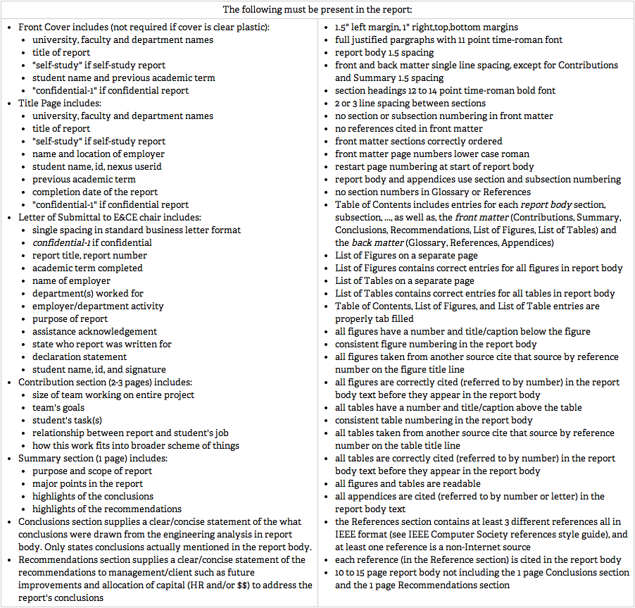
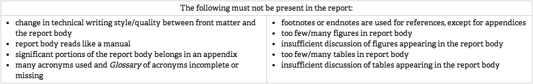